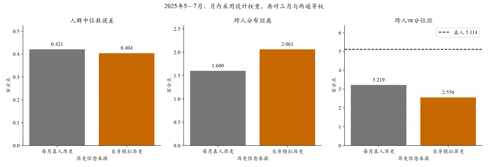
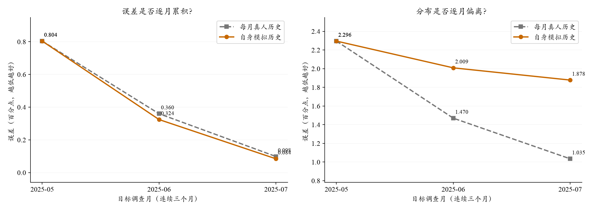
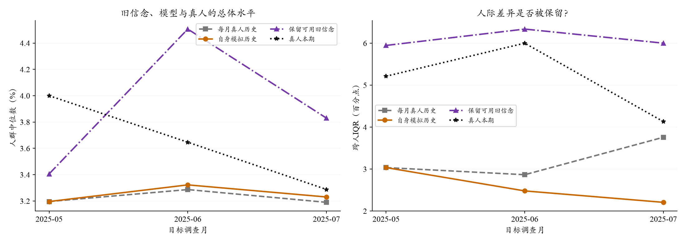

个人信念：每月补真人历史，还是连续使用自己的回答？
改用自身模拟历史后，人群中位数MAE变化 -0.017 pp，跨人W1变化 +0.461 pp。负值表示更接近真人。
这是短链误差诊断，不是三个月就完成了未来预测验证。分月结果比单一平均值更能说明问题。
1. 本轮比较什么？
2025年5、6、7月各96人，共288个人月、120人，71人连续三月入选。人口、食品价格、政策、采购角色和随机3/8/20篇新闻相同。两组各两遍：灰色组每月读取此前可用的真人历史，橙色组初始化后只接自己的模拟回答。共同起点共享请求；后续分开接续。
首次进入本次模拟与首次参加SCE不同。真实新入组者用严格更早匿名供体的合成起点，明确标注；再次进入Core不会被误当新人重置。两遍生成不是两批不同居民。
2. 总体误差与分布

来源：本批完成的模型原答与独立真人评价，2025-05至07；设计权重，三月/两遍等权。IQR需接近真人，不能单看增大。
单位pp；Q9先由冻结方法从十档概率得到每个人的密度均值，再取跨人中位数。RMSE对各月/遍的中心误差平方后平均再开方。主口径包含明确标记的失败输入状态后备，Q9支持281个人月；实际输出共同支持275个人月，不能混用两种口径的最低值。
3. 是否存在误差累积？

各点平均两遍各自的月误差；每月人群存在正常轮换，连续71人的独立分组也一并报告。

这张图统一限制在可计算旧信念的280个人月。图中数值不与上方完整主口径混称；各月先算加权统计，再平均两遍。
在同一可用旧信念人群上比较基线
旧信念基线含明确的合成起点，不能全部称为“照抄本人上期”。只有真实相邻月记录的人，另有genuine_previous_only_support对照。变化W1只在有真实相邻上期Q9时计算。
4. 哪些人群出现差距？
分组只作描述，不解释为因果。新入组者在首次初始化时两组起点相同，本来就不应凭这个对照宣称初始化机制更好。部分组只覆盖部分月份，完整月/遍覆盖与缺失见JSON。
Q8点预期独立结果
Q8支持288个人月；不因Q9无效删除有效Q8。
失败、归一化、每遍及其他分组
原答、错误与来源保存在私有账本；本页只给聚合。比例归一化、字段保留和密度失败后备的逻辑位置计数：
{
"observed_history:normalized_q9": 2,
"simulated_history:normalized_q9": 2,
"observed_history:q9_retained_input": 3,
"observed_history:q8_retained_input": 3,
"observed_history:density_fit_fallback": 1,
"simulated_history:density_fit_fallback": 1,
"simulated_history:q9_retained_input": 3,
"simulated_history:q8_retained_input": 2
}两遍、首次进入Core/持续/间断分组，以及真实上期基线均见完整聚合JSON。首次共享请求的两个逻辑位置不能当作独立回答。
5. 实际执行与研究边界
DeepSeek V3.2，OpenRouter→固定SiliconFlow FP8，温度0.5、JSON、关闭思考、最多1024输出token。本批912次请求，1152逻辑位置，峰值128在途；API报告$0.6087，含未知费用预留$0.6244，上限$5。调用约5.4分钟，自动重试0次。
这是采用历史当期画像与月中信息截止的A线诊断；模型训练知识的时间风险仍在。三个月可以识别明显接线问题和短期漂移，不能证明长期误差稳定或全国预测成功。未按本轮成绩改提示、删人或重新选择供体。
本页读取完成缓存，0新增API、0额外密度拟合；源码与协议见冻结执行包。下一步把条件重建和自主递推的实际边界纳入最终运行方案，再完成宏观组合与连续月份工程。